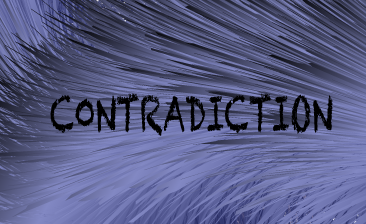

Contradiction
Those who study Simone Weil's works face an evolution in the thoughts of this French lady. Thus, it might be incorrect to divide her thoughts into two parts, namely the early part and the later part. For instance, Simone Weil's religious and metaphysical thought in her recent works is both Christian and Platonic and, thereby, is supranatural in some way. However, her inclination and turning toward God not only isn't in contrast to her precedent thoughts but also has occurred due to her consideration of reality and her relationship with the surrounding world. Therefore, it can be surely said that such a spiritual tendency in her is not separate from her materialistic attitude or Marxist considerations and they cannot be assumed contradictory; instead, such a turning has occurred on this ground, which provides all conditions for her to construct her religious and metaphysical thought on it. Such a turning in her attitude toward the world, human, and God can be considered in two ways. The first one is what was mentioned earlier, i.e. the process of evolution for reaching the reality; of course, if the reality is God. But this turning can be viewed from another point of view, according to which wherever she couldn't answer her questions with logical and philosophical evidence, she has preferred to call them supranatural.
When studying Simone Weil's works, one may encounter many contradictions that are integrated and there is a coherence hidden in the concepts, which increases awareness and awakens humans. Regardless of accepting all conclusions of Simone Weil, she broaches some issues that encourage any audience to know more. A proper understanding of Simone Weil's mystical thought necessitates knowing the concept of "contradiction" since she expresses her religious philosophy through a set of contrasts and contradictions. This is important because she expresses these distinctions not as dualism but as contrasts that, themselves, are intermediaries for uplifting the human soul.
On this basis, when studying Simone Weil's writings, the reader constantly faces words such as time, imagination, necessity, …, in the concept of which some sort of contradiction is hidden. On the one hand, these words are considered obstacles for humans and, on the other hand, their essence results in existence (life). Therefore, the reader instantly asks himself how does a philosopher with the wisdom and meticulousness of Simone Weil utilize such contradictory words? Hence, having a proper understanding of contradiction can be helpful for those who are interested in Simone Weil's thoughts.
Perhaps, one may encounter phrases such as "direction of no direction 1", "no-grain food 2", "kingdom of poverty 3", "wealth of poverty 4", … only in the works of poets and mystics. These phrases not only are not empty of ration and logic but also, besides their beauty, give a fillip to human and reveals a reality for him. Does Simone Weil, like poets and mystics, point out contradiction by making changes to grammar as mentioned above or adopt another method?
The use of such contradictory phrases by logicians, philosophers, or a mathematician not only is far from common sense and clarification but also is impossible. What this group means by contradiction is clear. Their meaning is that any phrase that can be expressed in the "p=>q&~q" format is contradictory. Any phrase that stands true in this equation is meaningless because it attempts to prove two opposite propositions of one subject at the same time. This means that p cannot be both q and ~q at the same time and an incorrect proposition cannot be concluded from a correct proposition.
Now, we should see what Simone Weil means by contradiction. She is a philosopher who utilizes the laws of physics and mathematics to describe her mystical and philosophical terms. She certainly doesn't use these contradictions merely by poetic criteria. She doesn't disturb grammatical structures to merely add beauty to a text, especially when her belief about mathematics is that:
"only those external affairs can penetrate the soul that have the chance and capability to reveal the individual's reality for him. Affliction, mathematics, and beauty all have the capability to break the ego's shell and penetrate the soul" (Finch, 2001: p.12).
Therefore, she states:
- "this is the truth that penetrates our feelings through pain, our intelligence through proving mathematics, and our ability to love through beauty" (Weil, 1968: pp.186-187).
Simone Weil, like all others 6, accepts "contradiction" through the same logical method but she never spends time arguing about it, except for an exceptional case that is mentioned in the "Lectures of Philosophy":
- "The syllogism is, to put it briefly, nothing but a rule of language to avoid contradiction: at bottom, the principle of non-contradiction is a principle of grammar." (Weil, 2001; p.78)
It is observed that she introduces grammar as a tool for preventing contradictions in logical theorems. But the problem is that she doesn't consider grammar as a faultless tool for reaching the reality. She believes that language, if used properly, can at most adjust the opinions and nothing more (Weil, 1986: p.88). This philosophical use of contradiction, as a solution to reach the reality, is clearly put aside. However, we hoped that she exactly describes why contradiction doesn't present this solution in this way but, unfortunately, she didn't do that.
On the contrary, it was observed that she has used this term in such a way that it embraced any kind of contradiction between two thoughts. In this regard, for her, contradiction not only is the inability of humans to think about this conditional proposition (p=>q&~q) because p logically indicates that it must be one of these two but also embraces the opposite thoughts that are related to the contradictory affairs or incommensurate or ultimately the elements of religious mysteries such as the belief that God has been represented in three beings (father, son, Holy Ghost) despite His unity. Thus, Simone Weil applies the term "contradiction" in a way equivalent to other terms such as "incommensurate", and "mysteries".
Footprints
- Every dove flies toward a direction, but this dove flies toward the direction of no direction (Molavi)
- We are not tame flying birds; we are fed with the no-grain food (Molavi)
- We prefer the kingdom of poverty to the whole universe (Shah Nematollah Vali)
- If you don't have the wealth of poverty (having nothing), never boast of being dervish (Sanaei)
- Finch, Henry Le Roy. (2001), Simone Weil and the intellect of grace. Ed. Martin Andic. Continuum New York
- Mathematicians, logicians, and philosophers
- Weil, Simone. On Science, Necessity, and The Love of God. (1968) trans. Richard Rees. New York: Oxford Univ. Press
- Weil, Simone. Lectures on Philosophy. (2002), Trans. Hugh Prince.New York: Cambridge University Press
- Weil, Simone. Simone Weil: An Anthology. (1986) Ed. & Trans. Sian Miles. New York: Weidenfeld & Nicolson